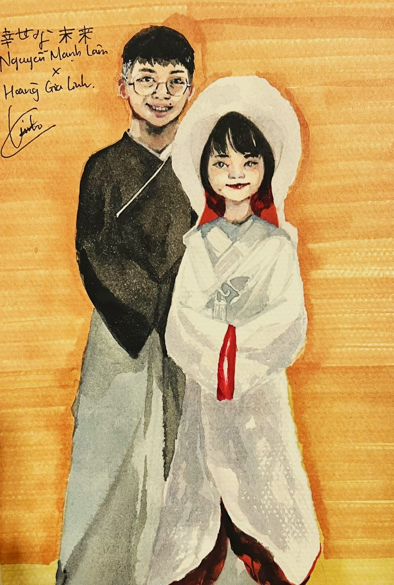

Mày tìm được trang này thì tao ngạc nhiên lắm đấy. Tao năm 2025 muốn hỏi là mày tìm được như thế nào vậy? Mày gặp tao lần nữa như thế nào vậy? Hay mày lấy link từ đứa khác? Nếu vậy thì mày lấy từ đứa nào vậy???
Tao xin lỗi nếu mày thấy khó chịu với sự tồn tại của trang này. Chỉ là nó có tên là "art gallery", mày cũng đoán mày sẽ nhìn thấy cái gì trong đây chứ? Mày đã đến đây, tao chẳng cứu mày nổi. Tao có quyền mà, đúng không nhỉ, haha.
Tao mất công vẽ mấy bức này lâu lắm đó! Mày thấy phiền thì thoát ("back"), còn mày ở đây thì xin hãy thưởng thức chúng ... Mất công lắm! Tao nói thật, không phải ai cũng đổ công sức ra vẽ gần 50 bức đâu, haha. ... Tao để đây để vui mắt thôi, chứ nói thật, tao cho mày xem làm chi? Tao đâu còn thích mày nữa đâu, đúng không? Haha, tao sao mà nói cho tao sau này được. Nhỡ tao gặp lại mày vì lý do vớ vẩn gì đó rồi tự dưng thích lại thì sao. Ai mà biết được, đúng không:)?
Trước khi mày đi tiếp thì tao xin cảm ơn mày được không? Mấy bức thư kia, tao thực sự không diễn tả được do đầu tao hỗn loạn, với cả sau này tao chẳng biết phải nói gì. Tao mong bây giờ tao đủ tỉnh táo để nói những gì tao cần nói. ... Haiya, cảm ơn mày vì đã cho tao lý do để tiếp tục hành trình cải thiện bản thân, cảm ơn mày vì đã cho tao thấy tao phải tốt lên nhiều ...:)/. Bức tranh đầu tiên mày cũng hiểu ý tao định nói là gì đúng không? Ừ, cảm ơn mày vì đã cho tao cảm hứng học Toán, không có mày tao chắc không thích Toán (hay Hóa) đến mức đấy đâu. Tao chắc sẽ chẳng có cảm hứng gì để tiếp tục luôn ... Vì mày mà tao hứng thú đi thi vượt cấp đến vậy đấy. Không có mày thì chán lắm. Chẳng có ai cùng lứa để cạnh tranh với ... hahahaha. Thế thì chán lắm. Bên này (Singapore) chán lắm. Tao thích (nói chuyện với) mấy đứa thích học, có đam mê (như mày) á. Bên này chả có ai.
Thôi lỡ nói nhiều quá rồi. Mày muốn làm gì thì làm đi:)
cái hôm thầy thể dục bắt chạy xong tao ở đầu hàng với mày ế. Haha
Giấc mơ năm 2k25, tao thấy giấc mơ ấy đẹp (và hơi buồn haha. Nhưng càng buồn càng đẹp, vả lại sự thật lúc ấy buồn(?) không kém.) nên thêm vô đây thôi. Tao chẳng nhớ mày định đạp tao đi đâu nữa. Chắc chẳng quan trọng đâu, đúng không?
Giấc mơ ấy làm tao nhớ đến bài hát tiếng Anh nào đó ... Kiểu cái cảm giác bâng khuâng ngọt ngào nhưng nặng nề ấy (tiếng Việt kém).
(Lạ thiệt, tao không nghe nhạc tiếng Anh.)
Chắc tao rảnh nên vẽ thôi. Tao quên mất inspiration là gì rồi.
Sến quá, haha.
“Life is blue because it didn't have you„
album:ai
Một trong mớ bức trong series "Sở thú trá hình".
Vẽ lúc Giáng Sinh nên gọi là quà Giáng Sinh của tao cũng được, hehe. Từ không biết bao nhiêu năm trước nữa.:)
Giấc mơ của tao trông ngọt ngào thiệt nhỉ?
Tao cũng đoán là mày sẽ đi KHTN rồi, nên tao thử vẽ đồng phục của tụi nó (search Google ấy mà). Tao đi Ams (đúng hơn là định ...) nên tao mặc đồng phục Ams. (Self-explanatory) Giờ nhìn lại thì tao đoán trúng phóc nhỉ? (Cứ như thể tao đã không nhìn thấy mấy lần mày nhắn mày muốn đi KHTN ấy. Haha.) Chỉ tao là không ngờ tao sẽ đi xa đến vậy.
Tao tồi quá nhỉ? Hay ai cũng muốn tao đi? Haha, tao không nên nói chuyện như vậy, đúng không? ... Tao mà quay lại được, chắc hẳn tao đã làm vài thứ khác đi, nhưng tao dĩ nhiên chẳng làm vậy được. ... (Tao còn có điều để nói.)
Mg(OH)2 là kết tủa. Mày sinh ngày 24, tao sinh ngày 24 nên tao chọn nguyên tố có NTK là 24 (Mg). Tình yêu có thể được coi là kết tủa, do nó là một thứ kì diệu, khác biệt sinh ra từ hoàn cảnh và sở thích của từng người (tao quên logic của tao ngày xưa rồi). Thế nên tranh mới tên là Mg(OH)2. Cũng một phần là vì nó cũng khá bền, ít ra với kiến thức của tao tao có thể nói vậy. Chứ cũng không biết đâu, hehe.
Cái hôm Chủ Nhật chụp kỉ yếu ấy, mày mặc áo dài trông đẹp trai quá (lmao) nên tao nhất quyết phải vẽ cái gì đó với mày trong áo dài. Không thế nào khác đi được. Tao thích combo mực xanh với ánh sáng vàng chrome nên đó là kết quả đấy thôi:).
Tokyo Night Life. 3 bức tranh to trong một tờ lớn, haha ~ Hồi đấy đọc Demon Slayer nhiều nên mấy bức vẽ cũng bị ảnh hưởng (Giyuu và Shinobu là hai nhân vật từ Demon Slayer), hình như hồi đó tao cũng nghe bài "Ghost City Tokyo" (幽霊東京) nhiều nên lấy cái tên tranh từ đó:3 Cách vẽ mắt cũng chi phối nhiều bởi Oshi no Ko. Còn mấy bánh kẹo xung quanh trang trí là chi phối bởi cái bụng đói, hehe.
Tao nhớ hồi ấy vẽ thành phố Tokyo (cái tranh góc trên cùng với dòng chữ "Tokyo night life" ấy) mà rã rời cả tay đến muốn chết, sau đó 3/4 tranh lại bị cắt ra và che đi mất. Ựa. Mà nhìn bức pháo hoa kia cũng nom tự hào, hahaha ~~~
Tranh này để chụp được cho đẹp nhất phải để nghiêng một góc, chụp dưới ánh sáng. Do tao dùng nhũ, mà nhũ sẽ không thấy rõ nếu tao chụp dưới bóng râm. Nếu thế pháo hoa trông chán lắm. Để được vàng thế kia, cũng phải edit màu, lấy góc kinh lắm đấy ...:) Chụp tranh traditional là cả một nghệ thuật. Chứ tốt nhất là xem tranh ngoài đời ... thế mới thấy được sự tươi tắn của tất cả các màu!
Còn để dịch hết mớ tiếng Nhật ... Tranh pháo hoa thì có ghi "pháo hoa". Thế thôi á. Ngay gần cái bánh con cá, dưới bức ấy ghi "tất cả chúng ta cần là tình yêu" (sến quá). À, trong bức tranh pháo hoa còn dòng chữ bên trên nữa, ghi "<3 anh là tình yêu của tôi" đại loại là thế. Đại từ xưng hô thế nào cũng được lol. Ngoài ra ... Bên trái của tranh pháo hoa là tên bài hát "Ghost City Tokyo". Dưới dòng chữ "Tokyo night life" là "angie x sirius", xuống dưới bức tiếp theo tao giải thích cho. Còn mấy dòng chữ Nhật dài ở background ... Tao quên rồi (lol). Chắc là lyrics bài hát hay là dịch cái gì đấy ra thôi. Tao cũng dễ hiểu mà.
あなたは心の夢！
星野アイ
Cosplay!
Haha, tao thử vẽ mày cosplay Ai Hoshino (idol) trong Oshi no Ko. Crossdressing chắc cũng không sao đâu nhỉ! Tao chỉ vẽ thử thôi, nếu mày không thấy thoải mái thì tao xin lỗi! Tao thực sự không có ý đó. Mong mày đến đây chỉ để nhìn lại kí ức thôi. Tao nhớ phải hí hoáy mãi mới ra nổi cái gì đó giống mày ... Mày có thấy giống không? (Lmao)
hikare inochi
Là bài hát thì phải! Ừ, là bài hát. ヒカレイノチ. Tao hồi đấy nghe bài đấy nhiều. Lời cũng lay lòng lắm, mày thử đọc thử đi. (Đây là lý do tao nghe nhạc Nhật, đúng không nhỉ?) Cũng là mày trong bộ đồng phục KHTN (giống cái áo khoác mày mặc hôm 20/11/2024 vậy! Tao đúng là đoán được tương lai mà (lol)) và tao cũng đang mặc đồng phục Amsterdam kia. Cũng coi là một bức tranh chào tạm biệt ... Composition trông thật ironic nhỉ? Tao lại nhìn về phía Mặt Trời, mày nhìn phía còn lại. Mày hiểu ý tao chứ? Bên đó mày còn ổn không vậy? Bây giờ tao đoán mày vẫn ổn, nhưng ai mà biết được, đúng không? Hãy vui vẻ như xưa nhá <:D. Ngây thơ thì dĩ nhiên không thể được, nhưng ít ra hãy giữ những cảm xúc chân thật~!
Đang nói từ một con người không còn nhiều cảm xúc chân thật nữa! Bên này là một hũ hỗn loạn. Nên ở trên tao mới cảm ơn mày, cho tao cảm ơn lần nữa nhé. Tao nói thật đấy, tao không đùa đâu. Cảm ơn vì đã cho tao một mảnh đời đầy giấc mơ và khổ đau, cảm ơn vì những trải nghiệm đặc sắc.
大きな夢描くでもなく 今日の空を見るために
生きてみたっていいだろう 誇らしげに
誰も違う物語
迷いもがきながら 心を動かして
「世界はまだ捨てたもんじゃないよ」なんてね
heart
Là một lần mày lên page trường thì phải ... Hồi đấy tao đến Sing rồi, vài tháng sau thì phải. (Tao đang nói gì vậy, cái ngày tháng ghi rõ ràng ra thế kia) Trái tim đó cho ai vậy?~ Tao đùa đấy. Tao vẽ trong ánh sáng vàng, nên bức tranh dường như thiếu mất màu vàng ngoài đời thật, haiya. Tao phải edit lại đấy. Bức ban đầu trông buồn và xanh đỏ lắm. Haha, nỗi khổ của họa sĩ. (Phất lờ những dòng chữ sến súa đi :))
Happy New Year 2023!!!
Tao vẽ cho năm mới hôm đó! Lớp 8 thì phải, ừ, trước khi tao cắt tóc, haha. Tao dĩ nhiên lúc nào cũng vẽ tao là một con người thiệt là trẻ con (tao cũng hơi như thế thật, tao thú nhận) và mày là một người ... kiểu ... tao không biết nữa, tùy bức, tùy hoàn cảnh:) Tao vẽ mày tao cẩn thận lắm. Trông không phải là bức tranh đẹp nhất, nhưng tao cố hết sức rồi<:). Tao cố sử dụng màu sáp dầu (ngày xưa, hồi còn tiểu học, tao học vẽ bằng cái chất liệu đấy, giờ tao không hay dùng nữa, lên cấp 2 tao bỏ), bẩn hết tay nhưng cũng xứng đáng phết! Màu trắng là bút xóa. Tao là một con người biết nghĩ sáng tạo (đang đùa).
Chụp đểu nên tao lỡ cắt mất cái số "3" từ "2023" :((( tao phải mò lại ảnh cũ mới biết là năm 2023. Hồi đấy vừa thi HSG thành phố xong đúng không nhỉ? Tao nhớ chứ. Hồi đó, mày còn nhắn trên đz với tao là "mày cũng thấy đề khó à" hay cái gì gì như thế. Những ngày cũ ... Tao nhớ quá. Ựa.
Giấc mơ đầy bươm bướm ~

Điệu walz với người không biết nhảy
Bên trái toàn mấy bức tranh vẽ cho vui thôi. Có ý tưởng gì là vẽ ra ấy mà. Cũng là colour study luôn nên tao đã chơi qua lại với màu sắc một tí xem thế nào. Kiểu nên dùng màu gì để cho tranh có vibe "regal" hay "dreamy" hay "vivid" ấy (có google translate sẵn tay đi:)) Kể ra cũng vui phết. Dùng mỗi 4 màu để tạo ra cả một thế giới kí ức ...
sirius a:
the lore
Về con mắt với ngôi sao? Đơn giản lắm. Chuyện là thế này.
Tao xem "Your Lie in April" (四月は君の嘘) xong trong đấy, nữ chính gọi nam chính là "Friend A" (ý là friendzone ấy). Nhưng (spoiler alert) nữ chính thực sự yêu nam chính, nhưng vì lý do riêng mà cô giấu tịt. Tao thấy nom cũng hay (muốn có nước mắt hay nỗi buồn thì tao khuyên mày xem:)), mà dù sao tao cũng cần có cách để codename mày khi tao ở nhà/ nói chuyện ở chỗ đông người. Thế tao kiểu "hmm, mình cũng nên nghĩ ra cái gì tương tự, nhưng nếu cũng là Friend A thì chán lắm, dù sao thì nó cũng không phải là bạn mình, và nó còn không biết gì về mình."
Là "sirius (A)" (Thiên Lang A) vì đó là tên ngôi sao sáng nhất bầu trời đêm, không tính ngôi sao Bắc (Polaris) và các hành tinh. Đến đây mày hiểu chưa? Ánh sáng của mày quá đỗi đẹp, đến nỗi tao muốn theo và ngắm nhìn ... (sến quá, nhưng đúng thiệt là như thế.)
Còn cái ngôi sao trong mắt nữa nhỉ? Thế thì phải tìm đến Oshi no Ko, haha!
Các nhân vật chính trong Oshi no Ko có mấy cái ngôi sao trông rất đẹp trong mắt, tao thấy thích nên tao vẽ thử thôi! Về tại sao chỉ có 1 ngôi sao, và tại sao lại là ngôi sao bảy cánh kì cục đến vậy ...
Mày là một ngôi sao tỏa sáng. Ừ, trong đầu tao thì thiệt như vậy. Mày có tài năng. Điều đó không thể phủ định được, đúng không? Nhưng mày không phải là người hoàn hảo. Vì thế nên mày không có hai ngôi sao trong mắt mà chỉ có 1. Vì mày cũng là người cả thôi. Trong Oshi no Ko, người duy nhất có hai ngôi sao là Hoshino Ai, người "Ultimate Idol" bao người ái mộ, người mà bao người trong ngành mới thấy lần đầu. Kiểu như vậy. Mày đúng thiệt là người tài năng nhất, nhiều đam mê nhất tao từng thấy, nhưng tao không thể cứ để cảm xúc chi phối bản thân, đúng không? Theo một góc độ người bình thường, dĩ nhiên mày không hoàn hảo. Điều đó dường như hiển nhiên rồi. Có phải lúc nào mày cũng thể hiện "tài năng" của mày đâu, mày cũng còn có cuộc đời của mày, mày cũng có quyền không hoàn hảo chứ, đúng không? ... Mày cũng 16 tuổi (hồi tao tạo ra cái uhm ... "skin" này (gọi tạm thế đi) thì là 13 tuổi), tao cũng thế, chúng ta đều là người (bị xã hội đè nén những kì vọng quá đỗi xa vời) hết cả.
Lý do tại sao ngôi sao của mày có 7 cánh ... Tao gắn mày với số 7. Vì tao thích số 7 và tao thích mày. (lmao) Nhưng vì mày không hoàn hảo, nên ngôi sao ấy cũng không bao giờ hoàn hảo. Trông nó cứ như thể nó không hoàn thiện vậy, và đúng với tao là như thế, vì còn rất nhiều thứ mà làm mày "mày", không chỉ điểm số hay đầu óc của mày! Với cả, mày cũng biết mày cần phải vươn xa mới tới được "đỉnh cao", đúng không? Nên ngôi sao của mày bao giờ cũng sẽ là "ngôi sao 8 cánh khuất 1". (Một phần lý do cũng là tao không muốn cánh của ngôi sao che phần khác của mặt mày, nhất là mồm với nụ cười trong tranh:))))
Không chỉ thế đâu nhỉ ... Ngôi sao còn tượng trưng cho cái cảm giác "superior" mà mày toát ra ... khó đến gần, cảm giác như phải ngước đầu lên mới nhìn được vậy! Tao thấy vậy thôi. Chắc vì tao còn chả nói chuyện với mày lần nào. Cả hai chúng ta đều cộc lốc với nhau ... Haha. Tao còn đang cố nói dối chính bản thân mình. Chứ tao đâu muốn thế đâu ...? Tao được xưng hô với mày là "mình-Lâm", tao sướng lắm. Nhưng tao hèn, cứ nói thế đi. Tao sẽ chẳng bao giờ với được tới mày. Ngôi sao tượng trưng cho cái khoảng cách giữa "người" và "thần thánh" ... Khi mày đến gần hơn, và mày làm "người" thực sự, mày sẽ không còn ngôi sao đó nữa. Đôi mắt là cửa sổ của tầm hồn. Có ngôi sao ở đó, tâm hồn bị che đi mất, không đọc nổi.
☆ ☆ ☆
Bức tranh recent hơn sẽ có khả năng cao có cái ngôi sao ấy hơn. Tao quên mất tao nghĩ ra concept đấy từ lức nào rồi ... Haha. Cũng không lâu lắm đâu. Có vài bức có nó thôi à.
Hai bức tranh bên trên là mắt mày (trên) và mắt tao (dưới).
Thôi, để chúng ta quay lại topic gì đó nhẹ nhàng hơn! (To the beach~~~) Trông như giấc mơ hão huyền vậy, haha (dĩ nhiên). Mà lâu lắm rồi tao không ra chơi biển ... haiya. Về nhà nghỉ hè cũng chỉ học với nướng nhau ở nhà thôi. _ Mà nói thật, tao thấy cái spread này chung chung cũng đẹp phết, art trông cũng ngon ngon với cả cũng wholesome:) thích nhất là colour palette á.
ngẩn ngơ
Trích (mặt sau) bức bên trái:
Thực ra nó ko đẹp trai và "ngầu" đến thế đâu. Nó là lớp trưởng, nhưng giờ 5 phút thì câu nó nói nhiều nhất là "AaAaAaAAaa thắng rồi nháá" '-'
Rồi cô đến xong nó vẫn còn hú hét. Thế là tôi với con An phải hét để báo cho nó. Nó nhìn cô một phát xong nó lật đật về chỗ, hô chào cô rồi cô kiểu cLgT?!
Nó nghiện 2 3 4 ấy mà.
Cuối lớp 9 tôi sẽ nói với nó là "đồ trai đẹp nghiện 2 3 4!" rồi tát nó một cái. Không hiểu tôi có làm được không :)
hAHahAHahaAhaHa x 3,14
Mà này, tôi không xinh như trong tranh đâu. Lông mày tôi hếch lên, xong mắt thì thâm quầng, mặt thì có hai má như bánh bao à :)
Nhưng TÔI là họa sĩ nên tôi vẽ ntn cx đc nhé.
:)
dã ngoại hồ Tây
Bức tranh bên phải là bức từ hồi cuối lớp 7. Khá cũ rồi.
Tao vẫn còn nhớ tao ngồi dưới quạt, trời thì nóng chết đi được, lúc đấy buổi tối rồi, chẳng ai ở nhà, tao ngồi ngoài sofa, laptop với reference trên đùi xong vừa vẽ vừa cười khúc khích hí hí đủ thứ. Cái này hình như trong nhật ký thì phải. Mỗi tội cũng đẹp nên tao cắt ra (lmao). Ít ra là đẹp hơn một số bức khác. (Thực ra thì giờ nhìn lại khó mà thấy thỏa mãn với những bức từ ngày xưa lắm! Nhưng vẫn có bức bất hủ.)
Chủ yếu thêm vô đây vì kỉ niệm thôi, haha. Tao cũng không thỏa mãn cho lắm. ... Mày thử đoán timeline của những bức tranh trong art gallery xem thế nào?
"có đứa bảo tao đưa cho mày cái này"
Trích từ mặt sau: Từ khi tôi chấp nhận thích thằng khốn nạn ấy, lòng tôi nhẹ nhõm hơn hẳn. Cuộc sống tươi đẹp lên. Mọi thứ được tô bằng một gam màu hồng. Chim hót trở lại, mặt trời tỏa sáng trở lại. Giờ đây tôi đã có thể ngẩng đầu lên trời một cách đàng hoàng để ngắm mây và trăng. Quang cảnh giờ như bức họa của Claude Monet. Thằng ấy đã tô lên cuộc đời đơn sắc của tôi một cầu vồng, dường như bằng một cách kì diệu nào đó.
Tô tranh, nhưng không cần đến một chiếc bút.
Còn nhớ cái bức thư ấy không? Tao còn copy bản gốc đấy ... Ựa. Chắc cũng không phải nhắc lại đâu ...:)
Về bức bên dưới (No. 3) ...
Trích: ng bên trên (a): bảng tuần hoàn :: *giúi cho cái tờ bảng tuần hoàn
ng bên dưới (b): nguyên tử khối à?
a: số thứ tự
- một hồi -
b: heli iốt iốt oxi?
a: ừ (nhìn vào column bên cạnh)
b: HeIIO?
a: :) Thay I bằng l thường đê
b: HellO? -- giời ơi nói chào đi cho xog lại còn 🤡
a: cách chào mới mà :Đ
b: mày đúng là điên::
*một lần khác*
b (giờ là ng bên trên): CH song song AB, mà A; B; M; O thẳng hàng, suy ra?
a: CH song song AM, AO, MO?
b: ừ
a: *lag một lúc* à mày định chào tao chứ gì? CH // AO chả là CHAO
b: :Đ tao lây từ mày đấy con điên
a: *hết lời
*ngày tiếp theo:
a: 2 - 53 - 53 - 8.
b: CH // AO.
* * *
a: 2 - 53 - 53 - 8.
bạn a: ??? wtf
b: CH // AO
bạn b: ủa thằng này mày bú toán quá 180' à ::
Trích No. 5: hãy coi No. 5 là lời chào sớm
vì chúng ta chỉ đồng hành với nhau hết quãng đường cấp 2 thôi ~
- Linh
Sao tao chào tạm biệt nhiều thế nhỉ :)
“Say, what if “you and I„ were a thing?„
Cái spread ở bên trên thiệt đẹp-! Trông như một frame của anime với studio xịn xò ấy, hehe~ Còn phần trên và dưới nữa, nhưng tao thấy không đẹp cho lắm nên không thêm vô hahah. Gallery chỉ nên có ... những bức đẹp thôi. >:)
Dịch: 「月はきれい(綺麗)ですね」: "Trăng hôm nay đẹp nhỉ" (ý là cách tỏ tình bên Nhật đó lmao)
*
Còn bức bên trái! Đó là kết quả của việc lụy tình xong không biết giải phóng cảm xúc kiểu quái gì. Tao cũng đang test mấy marker còn ở nhà nên colour palette khá limited. Nhưng thôi, ánh sáng trong bức này cũng không tồi! Trông cũng soft soft, nhẹ nhàng:))) Kiểu như giấc mơ ấy. Hồi này tao cũng thích vẽ ánh nắng nhẹ nhàng, kiểu sáng sớm vậy. Lấy cảm hứng từ cái hồi cuối lớp 7 lớp đi chơi ở Hồ Tây xong ừm mọi người đi bơi. Ê tao xin lỗi nha. >:3
Dịch:
1. 「後でまた話しましょう」: "Chúng ta sẽ nói chuyện sau" (tên của một câu chuyện ... không tồn tại. Tao muốn viết cái gì đó nhưng tao không có hứng thực sự vùi mình vào viết 500 trang tiểu thuyết, haha (<:)). Ban đầu tao định vẽ ra kiểu truyện tranh, nhưng bé này lười;))
2. 「ごめんね、 でもあなたが好きじゃない」: "Xin lỗi, nhưng tao không thích mày" (câu này chắc mày thừa biết tại sao nó ở đây rồi. Lmao)
Tranh này vốn dĩ được vẽ vào mặt sau của một bức tranh khác, nhưng bức đấy trông ... không đẹp nên không có ở đây. :D
(No.1) Hồi đấy không giỏi vẽ chân dung cho lắm nên thôi kệ đi! Tao nhớ con An còn nói là trông như ... khỉ vậy lol. (Tao gõ dòng chữ này mà cũng thấy ngượng thiệt luôn á) Nhưng vẫn là một phần của progress của tao trên con đường ... chinh phục hội họa nên nó vẫn ở đây. Trông như hỏa hoạn ấy ... hahahahha thôi kệ đi. ;P
『後でまた話しましょう』, vol 1
máu (?)
ảo tưởng
Từ trái sang phải.
Bức 1: hình như đây là một trong mấy cái draft cho bìa của vol 1 của cái truyện tao muốn viết kia ... dĩ nhiên câu chuyện đấy không tồn tại, lol. Nhưng bức vẽ này trông cũng được phết ấy chứ? Tao thử vẽ mày hồi lớp 6. Cái áo AMC đấy, ựa, cái bút trắng không giúp gì nhiều lắm. ;-; Năm đấy tao cũng đi thi AMC thì phải ... Tao nhớ tao chỉ trả lời được có 11 câu, haha, tao vốn dĩ không phải đứa giỏi Toán.<;)
Bức 2: đọc manga (Demon Slayer thì phải?), thấy illus đẹp nên dùng nó làm reference thôi lmao. Tao thậm chí còn không biết tại sao tao lại chọn vẽ mày như vậy, cứu hahahahahs;dfja. Nhưng cái máu trên kính tao vẽ tao thấy trông cũng khá được ấy nhỉ? Background hình như là tao thử vẽ với mực tím của mấy đứa tiểu học, mực có màu rất sẫm và tươi, trông nom rất đẹp khi bên cạnh màu nước loãng thông thường ^-^
Bức 3: OK bức này sến quá. Quần áo cưới truyền thống bên Nhật đấy. Chắc nhìn là hiểu mà đúng không. T-T Dịch: 「幸せな未来」: "tương lai hạnh phúc". Lmao. Trông hơi ... bất ổn nhưng thôi, tao thấy tao vẽ tao cũng được nên cho vô;) (đùa đấy lol)
Ngoại truyện~~!! Ựa, đây là một AU (alternate universe) lmao. Tao thích ... ảo tưởng. Hehe. Nếu mày không biết đọc (đùa đấy): tao và mày 21 tuổi, tao giúp mày với luận án đại học. Kiểu soát chính tả mấy thứ lặt vặt vì có vẻ như cả tao và mày đang ở nước ngoài ... hahaha. Trông wholesome quá ... Kể ra giờ cũng muộn, và cũng chẳng liên quan gì, nhưng chúc sinh nhật vui vẻ nha. <:)))) Giờ chắc mày vẫn đang chơi Liên Quân, đúng không? Chắc ở một thế giới thiệt thiệt xa xôi nào đó điều này chắc sẽ xảy ra thật giữa mày và đứa nào khác nhỉ (đùa đấy) <;D Mày biết không, có hồi tao hơi tò mò nên chơi thử Liên Quân ấy, kết luận: trò chơi không dành cho tao! Lol.

Tao không hay doodle hay sketch nhiều, với cả tao chẳng có gì nhiều để nói, nên tao sẽ tiếp tục lan man về những thứ linh tinh ...:)
Về "Lâm-sama": -sama là một trong những cái ... đuôi? từ người Nhật dùng để thể hiện sự thân thiết, hay đơn thuần chỉ là quan hệ của họ với một người thứ 2 nào đó mà họ đang nói chuyện với/về. Trong danh sách còn có -kun, -chan, -san, đại loại mấy cái đấy. Chắc mày cũng biết đến cái kiểu "onii-channnn" rồi đúng không? Kiểu như thế. -kun và -chan dùng cho người thân thiết, kiểu bạn bè ấy, -kun THƯỜNG dùng cho nam và -chan THUỜNG dùng cho nữ. -san dùng cho lịch sự. -sama dùng để bày tỏ sự kính mến tột cùng hay mức tôn trọng cao, thường dùng cho người bề trên. Giờ mày hiểu chưa? <:)
Xin lỗi về mớ tiếng Nhật, hồi này hình như tao cũng đang học tiếng Nhật thì phải. Tại tao nghe nhạc Nhật, giờ tao cũng thế, với cả văn hóa của họ nom cũng hay:) Tao không phải wibu. Xin lỗi, không phải ai thích học tiếng Nhật hay sử dụng nó nhiều để được xem như là "ngầu" đều là wibu, hahahah. Anime duy nhất tao xem là 「四月は君の嘘」"Your lie in April", nhiều người khóc vì cái ending lắm nên coi đó là lời cảnh báo đi, nếu mày muốn xem. Manga thì ... Oshi no Ko, Demon Slayer, thế ... thôi ... Haahaha. Kiến thức tao về media hạn hẹp lắm. Không có thời gian ấy mà, với cả mấy ngày nay, vô community anime toàn thấy mấy người xem ecchi với hentai với mấy thứ ... tương tự ... Tao chỉ nghe nhạc Nhật thôi. Vì mấy bài hát của người ta hay. Bây giờ, tao đang nghe nhạc của iyowa, Tatsuya Kitani, đôi khi của Kashii Moimi, đôi khi của Giga P, tao hay nghe đi nghe lại mấy bài tao nghe nên cũng chỉ lòng vòng mấy người đấy thôi. Còn vài người nữa, nhưng tao không hay bới Youtube của mấy producer khác để tìm nhạc hay nên cứ nói là tao không hẳn là fan ... Chào đón đến corner™ của tao! Tao ít khi cho người khác overview về nhạc tao nghe lắm, nên mày nên thấy ừm biết ơn đi:3 (đùa đấy)
Không biết nói cái này có kì quá không nhỉ? Tao thích nhất mấy cái bài với lời buồn đến mức trầm cảm/ điên điên ấy. Không, những bài đấy sẽ càng hay hơn nếu nhạc nghe vui vui nhẹ nhàng như nhạc thiếu nhi ấy. Cái ... contrast ... Cái cách mà những thứ nom vui vẻ có thể mang lại sự tuyệt vọng ... ^^ (tao hơi điên xin tha thứ)
Tao thấy mày gần như chẳng bao giờ nói về thể loại nhạc mày thích nên tao cũng tò mò, heheh! Mặc dù đôi khi tao thấy mày cũng biết mấy bài VPop nổi nổi ... chắc tao cũng nên bắt đầu nghe nhạc Việt nhỉ? Haha. Có gì chia sẻ đi, tò mò lắm đấy! Mặc dù mày tập trung khá nhiều vô Toán nên tao còn chẳng biết mày có tí thời gian gì cho nhạc không ...
Khai màn của bao sự hỗn loạn! ~
ありがとう: Cảm ơn. ありがと ござ*いました (ghi nhầm là さ): Cảm ơn vì những kí ức đẹp (in context). 愛してる: (tao) yêu (mày). Dùng để nói về tình yêu sâu đậm. 空(の色)はきれいですね: Bầu trời (có màu sắc) thiệt đẹp nhỉ? Mimic câu "Trăng hôm nay đẹp nhỉ" mà người Nhật dùng để tỏ tình. Tao với mày đến trường vào trời sáng nên có lẽ tao sẽ nói vậy hơn là nói về trăng. 愛がなんだ?: Tình yêu là gì vậy? 言って: Nói ra đi.
Ghi như vậy vì cái spread trên loạn không kém gì. ... Tao để ở cuối cùng vì thực sự cái thứ này quá đỗi hỗn loại, phải để cuối cùng như "final boss" vậy >:)
Nói nghiêm túc thật thì ... Tao hồi đấy đang trong tình trạng rất bất ổn khi tao tạo ra cái thứ này. Mày nhìn số lần tao ghi "Cảm ơn" là biết mà, đúng không? Hahaha. Mấy cánh hoa trên đấy, là hoa phượng thật đấy. Cánh hoa phượng khô. Tao đạp quanh cái hồ gần trường, tao nhặt đem về ép. Thấy màu đỏ của những cánh hoa khá đẹp ... Haiya. Giờ tao mới nhận ra có một số từ bị cắt đi ... Dòng chữ ở góc ghi là "Từ "cậu" thật thân thương làm sao" (bên phải, dòng chữ bé tí, dưới cái "hệt như cậu mày vậy" ấy). Xin lỗi về ngôn ngữ, tâm trạng không đến nỗi đẹp nhất nên cách ăn nói cũng bị ảnh hưởng nặng nề. Ựa. Chắc từ đây mày cũng thấy tao là người cay đắng đến nỗi nào rồi. ...
Nói về mặt hội họa, spread này cũng không đến nỗi quá tồi ... Tao nhìn nó, tao chỉ thấy buồn. Kiểu như bị kéo lại sự vô vọng ấy ... Vòng xoáy. Không biết mày nhìn xong mày sẽ thấy thế nào nữa! ... ;-;
Và thế là hết! Tao đếm được có 37 bức trong cái gallery này, nhưng mấy cái spread có đến 5 hay 6 bức nhồi vào bên trong, nên con số thật chắc chắn hơn 37! Dù thế nào đi chăng nữa, bao cảm xúc bao nước mắt bao công sức đã được đổ vào những bức tranh này, nên tao thực sự mong mày thấy gallery không đến nỗi quá tồi ... Mong là như vậy. Chúng ta có thể nhìn lại kí ức với nhau qua cái trang này ... ^^. Tao chỉ có thế để nói thôi. Chúc mày hạnh phúc và thành công bên kia! Đúng như cái spread cuối cùng nói. Mỗi tội lần này không có sự cay đắng ấy. <:D
- Từ Hoàng Gia Linh, dành cho Nguyễn Mạnh Lâm